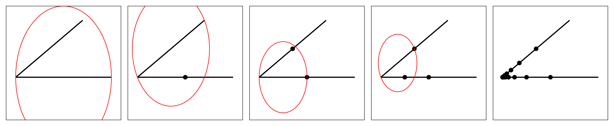

Mesh Refinement
Now we describe how we refine meshes. We do not discuss curve-bounded domains here, leaving this discussion to the curve-bounded section. The mesh refinement algorithm we implement is Ruppert's Delaunay refinement algorithm with some modifications from Shewchuk, following the presentation in Chapter 6 of the book Delaunay Mesh Generation by Cheng, Dey, and Shewchuk (2013).
To introduce the mesh refinement algorithm, we need to discuss a few preliminaries. We let $\mathcal M$ denote a mesh $\mathcal D\mathcal T(\mathcal P, \mathcal S, \mathcal B)$, where $\mathcal P$ is the point set, $\mathcal S$ is the segment set, and $\mathcal B$ is the boundary.
Triangle Quality
We need a way to measure the "quality" of a triangle in order to know what triangles need refinement. The quality of a triangle is typically measured using the radius-edge ratio, which is the ratio of the radius of the triangle's circumference to its minimmu edge length. Symbolically, $\rho = R/\ell_{min}$, where $R$ is the triangle's circumradius, $\ell_{\min}$ its minimum edge length, and $\rho$ is the radius-edge ratio. The lower the radius-edge ratio, the better we say the triangle's quality is. We can also view reducing $\rho$ as increasing the minimum angle, $\theta_{\min}$, since $\rho$ is related to $\theta_{\min}$ by
\[\rho = \frac{R}{\ell_{\min}} = \frac{1}{2\sin\theta_{\min}}.\]
We say that a triangle is of bad quality if $\rho > \bar\rho$ for some $\bar\rho > 0$ or, equivalently, $\theta_{\min} < \bar\theta$. Typically, $\bar\theta \approx 33.9^{\circ}$ is about the limit of convergence for the algorithm. In addition to controlling $\rho$, we can also control the area $A$ of the triangle, saying a triangle is too large if $A > A_{\max}$ and too small if $A < A_{\min}$.
Thus, given a triangle $T$ and constants $\bar\rho$, $A_{\min}$, and $A_{\max}$, we say that $T$ is of bad quality if any of the following are true: (1) $\rho > \bar \rho$ or (2) $A > A_{\max}$. For $A_{\min}$, we of course can't split $T$ in order to increase its area. Instead, the $A_{\min}$ threshold will be used to stop the splitting of any bad quality triangle if its area would be reduced to below $A_{\min}$, and any triangle whose area is already below $A_{\min}$ will never be refined further.
Edge Encroachment
Mesh refinement algorithms typically refine bad quality triangles by inserting their circumcenter into the triangulation (there are other variants, but we will not discuss them here). There is one problem with this approach: the circumcenter of a triangle might lie outside of $\mathcal M$, and so we would never be able to insert it. To get around this, we introduce the concept of edge encroachment. We say that a vertex $v$ encroaches upon a segment $e$ if it is inside the closed diametral circle of $e$ but is not a vertex of $e$, and $v$ is visible from $e$.
Checking for encroachment is relatively straightforward: The only vertices that might encroach upon a segment $e$ are those adjacent to it. In particular, let the segment be $e = e_{uv}$ and find the triangles $T_{uvw}$ and $T_{uvx}$ adjacent to $e$. If either $p_w$ or $p_x$ are in the diametral circle of $e_{uv}$, then $e$ is encroached. Checking whether a point is inside a diametral circle is also simple: By Thales' theorem, the angle $\angle p_upp_v$ is a right angle when $p$ is on the diametral circle, so $p$ is inside the diametral circle if and only if $\angle p_upp_v \leq 90^{\circ}$. To efficiently check if $\theta = \angle p_upp_v \leq 90^{\circ}$, we can use a dot product. Since
\[\cos \theta = \frac{\langle p - p_u, p - p_v \rangle}{\|p - p_u\|\|p - p_v\|}\]
and $\cos 90^{\circ} = 0$, we can check if $\theta \leq 90^{\circ}$ by checking if $\langle p - p_u, p - p_v \rangle \geq 0$. Thus:
- If $\langle p - p_u, p - p_v\rangle > 0$, then $\theta < 90^{\circ}$.
- If $\langle p - p_u, p - p_v\rangle = 0$, then $\theta = 90^{\circ}$.
- If $\langle p - p_u, p - p_v\rangle < 0$, then $\theta > 90^{\circ}$.
The first two cases would imply that $p$ encroaches upon $e_{uv}$.
Once we have identifed an edge as being encroached, we need to split it. We do this by simply inserting the midpoint $p_m = (p_u + p_v) / 2$ into the triangulation, and replacing the segment $e_{uv}$ by the two new subsegments, legalising any new edges as needed to restore the Delaunay property.
One issue with this definition of encroachment is that there may be a large number of vertices that have to be inserted to deal with all encroached edges as the diametral circle is quite large. To avoid this, we generalise the definition of a diametral circle to that of a diametral lens defined by some lens angle $\theta_\ell$. Firstly, let $p$ be a point on the perpendicular bisector $L_{uv}$ of $e_{uv}$, and left of $e_{uv}$, such that $\angle p_upp_v = \theta_\ell$, and similarly for a point $q$ right of $L$. Now draw two circles through $p_u, p_v, p$ and $p_u, p_v, q$, respectively, and compute their intersection. The diametral lens is this intersection. We show an example of a diametral lens below.

In this figure, the blue circle shows the diametral circle, and the red shape shows the diametral lens, the grey line is the perpendicular bisector of $e_{uv}$, and the magenta circles show the two circles whose intersection defines the diametral lens. Checking if a point $p$ is inside the diametral lens can be done using an extended version of Thales' theorem (see, for example, Theorem 9 in Lisboa's thesis). We define the quantity
\[\Delta(p_u, p_v, p) = \langle p_u - p, p_v - p \rangle^2 - \|p_u - p\|^2 \|p_v - p\|^2 \cos^2(\theta_\ell).\]
Then:
- If $\Delta(p_u, p_v, p) > 0$, then $p$ is inside the diametral lens.
- If $\Delta(p_u, p_v, p) = 0$, then $p$ is on the boundary of the diametral lens.
- If $\Delta(p_u, p_v, p) < 0$, then $p$ is outside the diametral lens.
One issue with diametral lens is that the final mesh is not guaranteed to be Delaunay, but many more subsegment splits will be avoided than if we had used diametral circles so that the final mesh has fewer triangles. It is possible that circumcenters are outside of the boundary when using diametral lens. In this case, we insert the triangle's centroid rather than its circumcenter.
Deleting Free Vertices
In addition to splitting a subsegment whenever it is encroached, we can also use an idea from Chew's algorithm for mesh refinement to improve our refinement. When we split a subsegment, points inside the original segment's diametral circle might cause unduly short edges to be created, leading to bad quality triangles that will just have to be split once again. To overcome this, we delete all free vertices inside the diametral circle, except those that are not visible to the segment (i.e., a segment in $\mathcal S$ occludes the visibility between the segment and the vertex), before splitting the segment. A free vertex is any vertex not belonging to a segment that was inserted into the triangulation through refinement, i.e. a vertex that was not originally in $\mathcal P$ and is not on the boundary or on an interior segment.
To delete these free vertices, we apply the following routine to each of $e_{uv}$ and $e_{vu}$. We write these details for $e_{uv}$ only.
- Get the vertex $w$ adjacent to $e_{uv}$ using the adjacent map.
- If $w$ is a free vertex and is either inside or on the diametral circle of $e_{uv}$, delete $w$ from the triangulation and return to step 1. Otherwise, stop the routine here.
Using this idea, we can reduce the number of triangles present in the final refined mesh while still retaining a high quality output. Moreover, since we use diametral lens instead of diametral circles, we avoid introducing as many vertices that would just be deleted by this procedure anyway.
Splitting a Triangle
Now let's discuss how we actually insert a circumcenter into the triangulation to improve the quality of a triangle $T_{uvw}$. The procedure is simple:
- Let $c$ be the circumcenter of a bad quality $T_{uvw}$.
- If $c$ encroaches upon some subsegment $e \in \mathcal S$, split $e$. Otherwise, insert $c$ into $\mathcal M$.
Inserting $c$ into $\mathcal M$ is simple using the Bowyer-Watson algorithm. Note that, for the point location step, we already know that the triangle $T_{uvw}$ is a triangle containg $c$ in its circumcircle, so we can skip the point location step.
Checking if $c$ encroaches upon a subsegment $e$ can be expensive. The cheapest way to do this is to actually just insert $c$ into $\mathcal M$, and simply check if any of the edges of triangles containing $c$ are encroahced. If they are, we undo the insertion of $c$ and return to the original $\mathcal M$ prior to the insertion of $c$, and split the marked encroached edges. To undo this insertion efficiently, we store a list of all changes to the triangulation made during the insertion of $c$.
Small Angles
A very crucial issue to notice with our refinement algorithm thus far is that it may fail to handle small angles. The first problem is called ping-pong encroachment, encountered when segments share a vertex and meet at an angle less than $45^{\circ}$. Consider the example below; we illustrate this using diametral circles, but the same problem can be encountered when using diametral lenses.
In the first figure, the bottom segment $e_1$ encroaches upon the vertex of the other adjoining segment $e_2$, so we split $e_1$ at its midpoint. Once we insert this new midpoint, the segment $e_2$ is encroached upon, and so we need to split $e_2$. The third figure then shows how the new segment of $e_1$ is encroached upon by the vertex adding onto $e_2$, and so yet again we must split this subsegment. We can continue this process again to obtain the fourth figure. This will repeat indefinitely, leading to many points added as shown in the last figure. This is the ping-pong encroachment problem.
To overcome this problem, we use concentric circular shells. The basic idea is to imagine that each input vertex is surrounded by concentric circles whose radii are all the powers of two. We will still always split a segment initially at its midpoint, but for any future subsegments we need to make use of the concentric circles. When an encroached subsegment adjoins another segment at an acute angle, we split it at one of the circular shells centred at the shared vertex, so that one of the new subsegments has a power of two length. The shell we choose to split at is the one that guarantees that the two new subsegments produced by the split are between $1/3$ and $2/3$ the length of the split subsegment. With this approach, we can avoid the ping-pong encroachment. Notice that the choice of having the shells be powers of two implies that, for any future splits, the most balanced split for the power-of-two length subsegment will always be at the midpoint. If both vertices of a segment adjoin other segments, then the segment could be split twice at each end. To deal with this, just chosoe one vertex arbitrarily and split it so that the subsegment adjoining that vertex has a power-of-two length between $1/4$ and $1/2$ the length of the split subsegment. The other subsegment could still undergo another off-center split, but eventually all subsegment splits are bisections. This solves our ping-pong encroachment problem since adjoining subsegments of equal length cannot encroach upon each other. An example of this adaptation is shown below.

In the second and third figures we have two midpoint splits since the segments are the input segments. For the subsegment in the fourth figure, we see that the new point is being put onto the concentric circles surrounding the input vertex, and similarly for the last figure. In the last figure, we finally see that the newly inserted vertx is no longer encroaching upon the other subsegment, and so the ping-pong encroachment stops.
One other improvement made by Ruppert is to avoid splitting triangles that are nestled in the corner of a small input angle. For a triangle $T_{uvw}$, suppose that $e_{uv}$ is its shortest edge so that the smallest angle of $T_{uvw}$ is opposite $e_{uv}$. Then, if $e_{wu}$ and $e_{wv}$ are both segments and the triangle is skinny, it is considered to be a nestled triangle and so the triangle will never be split.
The last improvement we consider involves seditious triangles. If two adjoining subsegments meet at a very small angle, then splitting them may lead to a new edge that is shorter than the previously shortest edge in the mesh, leading to a bad quality mesh. Moreover, this short edge will cause more triangles to be refined as the adjoining triangles will necessarily be skinny, leading to more short edges, thus leading to an infinite loop. To avoid this, we need to prevent these short edges from causing more refinement. We say that an edge is seditious if its two vertices lie on two distinct segments that meet each other at an angle less than $60^{\circ}$ (in this package, the default definition for a seditious edge actually uses an angle of $20^{\circ}$), they lie on the same concentric shell (we don't check this requirement in this package), and the two vertices are true midpoints (not off-center splits). With this definition, we say that a triangle is seditious if its shortest edge is seditious, and refuse to split any skinny triangle that is seditious, thus preventing seditious edges from infesting the rest of the mesh.
The Complete Algorithm
Now that we have an understanding of all the pieces involved in the refinement algorithm, we can list the complete algorithm.
- Start by identifying all encroached segments and placing them into a priority queue, prioritising the longer segments first.
- For each encroached subsegment $e$: Delete all free vertices in the diametral circle (or lens) of $e$ and then split $e$ at a position depending on whether $e$ is an input segment or meets another subsegment at a small angle.
- Next, identify all triangles that need to be refined, i.e. any triangle $T_{uvw}$ with $\rho > \bar\rho$ or $A > A_{\max}$, ignoring any of those which are nestled or seditious or $A < A_{\min}$. Store these triangles in a priority queue, prioriting the triangles with the largest radius-edge ratio first.
- Next, while there are any bad quality triangles: Attempt to split the bad quality triangle $T$ by inserting its circumcenter $c$ into $\mathcal M$ (or centroid, if $c$ is outside of the domain in case diametral lenses are used). If $c$ encroaches on any new edges, undo the insertion and then split all those encroached segments as in step 2. If the insertion was successful, check all the newly added triangles for bad quality and add them to the priority queue if needed.
- Once there are no more bad quality triangles to split, the algorithm is complete.